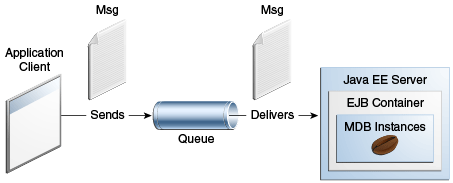

@Resource(lookup = "java:comp/DefaultJMSConnectionFactory")
private static ConnectionFactory connectionFactory;
@Resource(lookup = "jms/MyQueue")
private static Queue queue;
|
Plataforma Java, Edición Empresarial (Java EE) 8 El Tutorial de Java EE |
| Anterior | Siguiente | Contenidos |
Si está escribiendo una aplicación para ejecutarla en el contenedor del cliente de aplicaciones
Java EE o en la plataforma Java SE y desea recibir mensajes de forma asíncrona, debe definir una
clase que implemente la interfaz MessageListener, cree un JMSConsumer, y
llame al método setMessageListener.
Si está escribiendo una aplicación para que se ejecute en el contenedor web Java EE o EJB y desea
que reciba mensajes de forma asincrónica, también debe definir una clase que implemente la
interfaz MessageListener. Sin embargo, en lugar de crear un JMSConsumer
y llamar al método setMessageListener, debe configurar su clase de escucha de
mensajes para que sea un bean controlado por mensajes. El servidor de aplicaciones se encargará
del resto.
Los beans controlados por mensajes pueden implementar cualquier tipo de mensajería. Sin embargo, lo más común es que implementen la tecnología Java Message Service (JMS).
Esta sección describe un ejemplo simple de bean controlado por mensajes. Antes de continuar, debe leer la información conceptual básica en la sección ¿Qué es un Bean Controlado por Mensajes? así como en Uso de Beans Controlados por Mensajes para Recibir Mensajes de Forma Asíncrona.
La aplicación simplemessage tiene los siguientes componentes:
SimpleMessageClient: una aplicación cliente que envía varios mensajes a una
cola
SimpleMessageBean: un bean controlado por mensajes que procesa de forma
asíncrona los mensajes que se envían a la cola
La Figura 49-3 ilustra la estructura de esta aplicación. El cliente de la aplicación envía mensajes a la cola, que se creó administrativamente mediante la Consola de administración. El proveedor JMS (en este caso, el servidor GlassFish) entrega los mensajes a las instancias del bean controlado por mensajes, que luego procesa los mensajes.

El código fuente de esta aplicación se encuentra en el directorio tut-install`/examples/jms/simplemessage/`.
SimpleMessageClient envía mensajes a la cola que escucha
SimpleMessageBean. El cliente comienza inyectando la fábrica de conexiones y los
recursos de la cola:
@Resource(lookup = "java:comp/DefaultJMSConnectionFactory")
private static ConnectionFactory connectionFactory;
@Resource(lookup = "jms/MyQueue")
private static Queue queue;
A continuación, el cliente crea el JMSContext en un bloque
try-with-resources:
String text;
final int NUM_MSGS = 3;
try (JMSContext context = connectionFactory.createContext();) {
Finalmente, el cliente envía varios mensajes de texto a la cola:
for (int i = 0; i < NUM_MSGS; i++) {
text = "This is message " + (i + 1);
System.out.println("Sending message: " + text);
context.createProducer().send(queue, text);
}
El código para la clase SimpleMessageBean ilustra los requisitos de una clase de
bean controlada por mensajes descrita en
Uso de Beans Controlados por Mensajes para Recibir Mensajes de Forma Asícrona
.
Las primeras líneas de la clase SimpleMessageBean utilizan el atributo
activationConfig de la anotación @MessageDriven para especificar las
propiedades de configuración:
@MessageDriven(activationConfig = {
@ActivationConfigProperty(propertyName = "destinationLookup",
propertyValue = "jms/MyQueue"),
@ActivationConfigProperty(propertyName = "destinationType",
propertyValue = "javax.jms.Queue")
})
Consulte la Tabla 48-3 para obtener una lista de las propiedades disponibles.
Consulte
Envío de Mensajes Desde un Bean de Sesión a un MDB para
ver ejemplos de subscriptionDurability, clientId,
subscriptionName y messageSelector.
Cuando la cola recibe un mensaje, el contenedor EJB invoca el método o los métodos de escucha
de mensajes. Para un bean que usa JMS, este es el método onMessage de la interfaz
MessageListener.
En la clase SimpleMessageBean, el método onMessage envía el mensaje
entrante a un TextMessage y muestra el texto:
public void onMessage(Message inMessage) {
try {
if (inMessage instanceof TextMessage) {
logger.log(Level.INFO,
"MESSAGE BEAN: Message received: {0}",
inMessage.getBody(String.class));
} else {
logger.log(Level.WARNING,
"Message of wrong type: {0}",
inMessage.getClass().getName());
}
} catch (JMSException e) {
logger.log(Level.SEVERE,
"SimpleMessageBean.onMessage: JMSException: {0}",
e.toString());
mdc.setRollbackOnly();
}
}
Puede usar el EID NetBeans o Maven para compilar, implementar y ejecutar el ejemplo de
simplemessage.
Aquí se tratan los siguientes temas:
Este ejemplo utiliza la cola denominada jms/MyQueue y la fábrica de conexiones
predeterminada preconfigurada java:comp/DefaultJMSConnectionFactory.
Si ha ejecutado los ejemplos JMS simples en Escritura de Aplicaciones JMS Simples y no ha borrado los recursos, ya tiene la cola. De lo contrario, siga las instrucciones en Para Crear Recursos para los Ejemplos Simples para crearlo.
Para obtener más información sobre la creación de recursos JMS, consulte Creación de Objetos Administrados JMS.
Asegúrese de que se haya iniciado el servidor GlassFish (consulte Arrancando y Parando el Servidor GlassFish).
En el menú Archivo, elija Abrir Proyecto.
En el cuadro de diálogo Abrir Proyecto, vaya a:
tut-install/examples/jms/simplemessage
Selecciona la carpeta simplemessage.
Asegúrese de que la casilla de verificación Abrir Proyectos Requeridos esté seleccionada y luego haga clic en Abrir Proyecto.
En la pestaña Proyectos, haga clic con el botón derecho en el proyecto
simplemessage y seleccione Construir. (Si el EID de NetBeans sugiere que
ejecute una compilación de preparación, haga clic en el cuadro para hacerlo).
Este comando empaqueta el cliente de la aplicación y el bean controlado por mensajes,
luego crea un archivo llamado simplemessage.ear en el directorio
simplemessage-ear/target/. Luego implementa el módulo
simplemessage-ear, recupera los esbozos del cliente y ejecuta el cliente
de la aplicación.
El resultado en la ventana de resultados tiene este aspecto (precedido por el resultado del contenedor del cliente de la aplicación):
Sending message: This is message 1
Sending message: This is message 2
Sending message: This is message 3
To see if the bean received the messages,
check <install_dir>/domains/domain1/logs/server.log.
En el archivo de registro del servidor, aparecen líneas similares a las siguientes:
MESSAGE BEAN: Message received: This is message 1
MESSAGE BEAN: Message received: This is message 2
MESSAGE BEAN: Message received: This is message 3
Los mensajes recibidos pueden aparecer en un orden diferente al orden en que fueron enviados.
Una vez que haya terminado de ejecutar la aplicación, anule su implementación mediante la pestaña Servicios.
Asegúrese de que se haya iniciado el servidor GlassFish (consulte Arrancando y Parando el Servidor GlassFish).
En una ventana de terminal, vaya a:
tut-install/examples/jms/simplemessage/
Para compilar los archivos fuente y empaquetar la aplicación, use el siguiente comando:
mvn install
Este objetivo empaqueta el cliente de la aplicación y el bean controlado por mensajes,
luego crea un archivo llamado simplemessage.ear en el directorio
simplemessage-ear/target/. Luego implementa el módulo
simplemessage-ear, recupera los esbozos del cliente y ejecuta el cliente de
la aplicación.
El resultado en la ventana del terminal tiene este aspecto (precedido por el resultado del contenedor del cliente de la aplicación):
Sending message: This is message 1
Sending message: This is message 2
Sending message: This is message 3
To see if the bean received the messages,
check <install_dir>/domains/domain1/logs/server.log.
En el archivo de registro del servidor, aparecen líneas similares a las siguientes:
MESSAGE BEAN: Message received: This is message 1
MESSAGE BEAN: Message received: This is message 2
MESSAGE BEAN: Message received: This is message 3
Los mensajes recibidos pueden aparecer en un orden diferente al orden en que fueron enviados.
Una vez que haya terminado de ejecutar la aplicación, anule la implementación con el
comando mvn cargo:undeploy.
| Anterior | Siguiente | Contenidos |